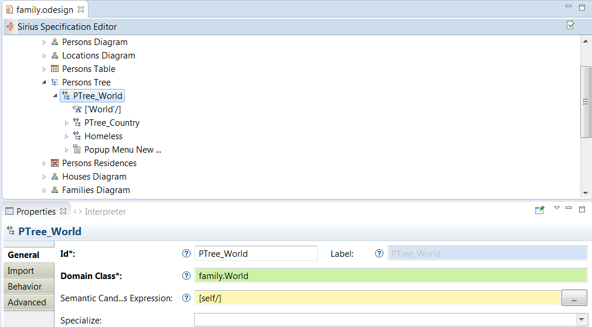

A tree is a representation which provides a hierarchical viewpoint on your data. It can provide a lot of information in a clear and concise way, and can be especially useful to progressively reveal more and more detailed information on a model when the user expands the tree elements to “dig into” the model.
Trees are probably the easiest kind of representation to define in Sirius. Do not hesitate to define small tree descriptions, even read-only, to provide alternative and synthetic viewpoints on your data, like type hierarchies, dependencies between elements, etc.
Collection<EObject> or an EObject.Note: Advanced features like layers, filters and mapping imports which exist for diagrams are not currently available for trees.
Similar to other kinds of Sirius representations, trees are configured by creating a Tree Description element and its sub-elements inside a Viewpoint Specification Model .
A Tree Description has a mandatory Id, which must be unique in the context of the viewpoint it is part of, and an optional Label. The Id is used internally to identify the type of tree, and must be kept stable across different versions of the description (or it will make trees created with the old Id unusable). The Label is used in the UI and will be visible to end-users. It can be changed with no impact on existing representation files. If the Label is not specified, the Id is used instead in the UI.
The mandatory
Domain Class attribute of a
Tree Description is the type of semantic element which are represented by the tree. In the
Model Explorer, end-users will be able to create new instances of this tree on semantic elements of this type (assuming the corresponding viewpoint is enabled in the
Modeling Project). The syntax for the domain class name can be the basic name, like
Class, a qualified name using name of the EMF EPackage which defines the type, like
uml.Class, or a fully qualified URI like
http://www.eclipse.org/uml2/3.0.0/UML#//Class.
By default, new trees can be created on
any instance of the
Domain Class. You can use the
Precondition Expression (available in the
Advanced category) to change this. If such an expression is specified, it will be evaluated in the context of the semantic element the user has selected, and only if the expression returns
true will the user be able to create a new tree on this element.
The default title for newly created trees can be specified using the
Title expression, which is evaluated in the context of the semantic element on which the tree is created, and should return a string. If the expression is not specified, the default title is the label of the tree description (of its
Id if no
Label is set) prefixed with the string
"new " (e.g.
new Class Hierarchy).
It is recommended that the Tree Description be explicitly associated with the meta-model(s) of the semantic elements it will represent. You can add referenced meta-models from different sources in the Metamodels property section of the Tree Description. Sirius will work even without this association, but setting it explicitly will give you better feedback when validating your VSM .
Finally, the Initialization and Show on startup flags control whether tree instances are created and/or opened automatically without user intervention. If Initialization is set, then when the viewpoint which contains this tree description is enabled, instances of this tree description will be automatically created on all compatible semantic elements. If Show on startup in set, then when a modeling project is opened which contains instances of this tree description, they will be opened: if only one such representation exist, it will be opened automatically; is there are more than one, a dialog box will appear to allow the user to select which one(s) to open.
The main concepts which define a tree are:
Some of the tools which can be defined on tree editors are specified directly inside the top-level Tree Description element:
true, then the body of the drop tool is executed, with the
element variable pointing to the semantic element being dropped and
newContainer the semantic element in which it is dropped (in this case the tree’s semantic element).
WARNING: if you choose
Model or
Both as source, your tool must be prepared to accept any type of source element which can be present in the
Model Explorer view, including elements which have no relation to the source mappings you specified for the tool. Use a precondition to check the nature of the element being dragged (available through the
element variable) to disable the tool source elements your tool does not support.
Trees are recursive by nature. Their contents is specified using a single concept of Tree Item mapping which can be composed recursively. A Tree Description contains Tree Item mappings which define which elements will appear at the top-level of the tree, while each Tree Item mapping can contain sub-mappings which define its own direct content. If an element (the tree or a tree item mapping) contains several sub-mappings, the element’s content will appear in the order of the mappings: first all the instances of the first mapping, then the instances of the second one, etc.
A Tree Item mapping is defined by a Domain Class, a Semantic Candidates Expression and an optional Precondition Expression (in the Advanced category). The Semantic Candidates Expression indicates where to look in the semantic model for elements which should be represented by the mapping. The expression is evaluated in the context of the parent’s semantic element (the parent being either the tree itself or the parent item). It should return a set of semantic elements. Only those which are instances of the specified Domain Class and which also validate the optional Precondition expression are retained and actually represented as instances of this mapping. The semantic element thus associated to each tree item is called the item’s target element.
You can associate more semantic elements to an item by defining the Associated Elements Expression (in the Advanced Category), which is evaluated in the context of the target and may return more semantic elements. Any change in the target element or one of the associated elements will automatically trigger a refresh of the tree item.
A Tree Item mapping may Specialize another mapping, in which case it will inherit all of the specialized mapping’s properties for which it does not specify an explicit value.
A Tree Item mapping may Reuse (see the Imports category) existing mappings, including itself, as sub-mappings. The effect is exactly the same as if the reused mapping(s) were created as children of the parent. However because a mapping can reuse itself or one of its parent mapping, this allows to create trees of infinite depth (or at least not bounded a priori).
Tree items are created lazily, only when the user expands a parent item. This means that if you define sub-mappings which use costly operations to create, the cost will only be paid when the user actually “digs into” the tree to the corresponding level of details. This also means that through reuse you can create trees of potentially infinite depth (as deep as the user chooses to expand them) without risking an infinite loop. Note however that once created tree items do not disappear if their parent is collapsed. They are only removed if the user explicitly deletes them.
The actual appearance of a tree item is defined by its style, while its behavior is defined by the tools associated to it.
An item’s appearance is controlled by one or more Style element(s) defined in the corresponding tree item mapping. Each tree item mapping must contain exactly one default style (which is created automatically when the mapping itself is created), and may contain one or more conditional styles.
An item’s style is comprised of a Label expression, evaluated in the context of the item’s semantic target, and which should return the text to show for the item, and several configuration properties to control the font, style, color (both of the text and its background) and icon of the item. The default icon shown for an element (if Show icon is set), is the one defined in the semantic meta-model for the item’s target element. You can specify a different one using the Icon path property (in the Advanced category). This is especially useful if you have several items which represent different aspects of the same semantic element and thus share the same target.
Tree Item mappings can have one ore more
Conditional Style. They are normal style elements with the same properties as described above, but wrapped in a
Conditional Style element which defines a boolean expression. If an item mapping contains such styles, then for each instance of the mapping, the conditional styles will first be tried, in the order of their definitions. The first style whose condition returns
true for the item’s target is used (and the remaining ones are not tested). If none of the conditional style apply, the default one is used. Note that because the conditions are tested in the order of definition, you should order them from the most likely to the least likely to optimize performance.
The behavior of a tree item is defined by the tools which are associated to its mapping. The tools which should apply to a tree item mapping are simply created inside the mapping itself. They can be:
false for the elements which should not be deleted.
{N} where
N is a number. The parts of the new label’s value which correspond to these substring will be available as variables named argN. For example, with an edit mask of {0}:{1} and an input string entered by the user of attr : EString, the tool’s body would be executed with variables arg0 set to attr␣ and arg1 set to ␣EString.
true, then the body of the drop tool is executed, with the
element variable pointing to the semantic element being dropped and
newContainer the semantic element in which it is dropped (in this case the tree’s semantic element).